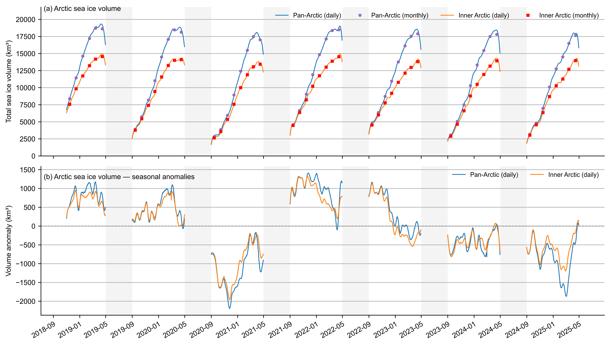

Arctic sea ice thickness and volume time series#
Summary: Daily and monthly pan-Arctic volume and inner-Arctic-Ocean thickness and volume from IS2SMGPSIT-V1, including seasonal cycles, anomalies, and growth-season comparisons.
Author: Alek Petty
Import notebook dependencies#
import xarray as xr
import numpy as np
import pandas as pd
import matplotlib.pyplot as plt
import matplotlib.dates as mdates
import matplotlib as mpl
from utils.read_data_utils import read_is2smgpsitv1_zarr
%config InlineBackend.figure_format = 'retina'
mpl.rcParams['figure.dpi'] = 300
import warnings
warnings.filterwarnings('ignore')
mpl.rcParams.update({
'text.usetex': False,
'font.family': 'sans-serif',
'mathtext.fontset': 'stixsans',
'font.size': 8,
'axes.labelsize': 8,
'xtick.labelsize': 8,
'ytick.labelsize': 8,
'legend.fontsize': 8,
})
mpl.rcParams['font.sans-serif'] = ['Arial']
Load IS2SMGPSIT-V1 and compute pan-Arctic volume#
Pan-Arctic volume is summed from the gridded thickness field over all cells except the Canadian Arctic Archipelago (NSIDC region 12). The Zarr now includes CAA grid cells, but we exclude them from pan-Arctic totals for consistency with earlier volume budgets. Inner-Arctic-Ocean volume uses NSIDC regions 1–5 only.
from utils.read_data_utils import is2smgpsit_domain_masks
IS2_SMOS_SMAP = read_is2smgpsitv1_zarr(persist=False, load_cache=True)
_masks = is2smgpsit_domain_masks(IS2_SMOS_SMAP)
mask_pan_arctic = _masks['pan_arctic']
mask_iao = _masks['iao']
innerArctic = [1, 2, 3, 4, 5]
thick = IS2_SMOS_SMAP['ice_thickness'].where(IS2_SMOS_SMAP['ice_thickness'] > -1e-10)
area = IS2_SMOS_SMAP['grid_cell_area'] if 'grid_cell_area' in IS2_SMOS_SMAP else None
if area is not None:
vol_cells_pa = (thick * area).where(mask_pan_arctic)
volume_fused_daily = (vol_cells_pa.sum(dim=['y', 'x']) * 1e-9).load()
else:
cell_km2 = 25.0 * 25.0
volume_fused_daily = (
(thick * 1e-3 * cell_km2).where(mask_pan_arctic).sum(dim=['y', 'x'])
).load()
volume_fused_monthly = volume_fused_daily.resample(time='1ME').mean()
_ft = pd.to_datetime(volume_fused_monthly.time.values)
volume_fused_monthly = volume_fused_monthly.assign_coords(
time=(_ft.to_period('M').to_timestamp(how='start') + pd.Timedelta(days=14)).values
).load()
# Optional: compare with precomputed total_sea_ice_volume (includes CAA if present)
if 'total_sea_ice_volume' in IS2_SMOS_SMAP:
_vol_pre = IS2_SMOS_SMAP['total_sea_ice_volume'].load()
print('Precomputed total_sea_ice_volume (may include CAA):',
f'{float(_vol_pre.min()):,.0f}-{float(_vol_pre.max()):,.0f} km^3')
print('IS2SMGPSIT-V1 pan-Arctic volume excl. CAA (km^3), daily and monthly:')
print('Daily:', volume_fused_daily.sizes['time'], 'steps,',
f'range {float(volume_fused_daily.min()):,.0f}-{float(volume_fused_daily.max()):,.0f} km^3')
print('Monthly:', volume_fused_monthly.sizes['time'], 'steps')
Loading IS2-SMOS-SMAP (is2smsitgp) Zarr from local cache
cache_path: ./data/cache/GPSat_multivar_20181101-20250430.zarr
Precomputed total_sea_ice_volume (may include CAA): 2,072-21,417 km^3
IS2SMGPSIT-V1 pan-Arctic volume excl. CAA (km^3), daily and monthly:
Daily: 1635 steps, range 1,778-19,332 km^3
Monthly: 78 steps
Cross-check: grid sum vs precomputed field#
The primary pan-Arctic series above excludes CAA (region 12). The cell below recomputes volume over the full valid grid (including CAA) for comparison with the precomputed total_sea_ice_volume field (which sums all valid cells, including CAA).
IAO volume uses the precomputed total_sea_ice_volume_regions_1_5 scalar (NSIDC regions 1–5), cross-checked against a from-grid sum.
Grid-cell ice_thickness is documented as the mean thickness across the grid cell (open water contributes ~0 m), not an ice-only average over floes.
if area is not None:
vol_cells_full = thick * area
volume_computed_daily = (vol_cells_full.sum(dim=['y', 'x']) * 1e-9).load()
else:
volume_computed_daily = (thick * 1e-3 * cell_km2).sum(dim=['y', 'x']).load()
volume_computed_monthly = volume_computed_daily.resample(time='1ME').mean()
_ft = pd.to_datetime(volume_computed_monthly.time.values)
volume_computed_monthly = volume_computed_monthly.assign_coords(
time=(_ft.to_period('M').to_timestamp(how='start') + pd.Timedelta(days=14)).values
).load()
print('Full-grid volume incl. CAA (km^3):')
print('Daily:', volume_computed_daily.sizes['time'], 'steps,',
f'range {float(volume_computed_daily.min()):,.0f}-{float(volume_computed_daily.max()):,.0f} km^3')
if 'total_sea_ice_volume' in IS2_SMOS_SMAP:
_vol_pre = IS2_SMOS_SMAP['total_sea_ice_volume'].load()
_diff = (volume_computed_daily - _vol_pre).load()
_pct = 100 * _diff / _vol_pre
print('\nCross-check vs precomputed total_sea_ice_volume (full grid, incl. CAA):')
print(f' max |diff|: {float(abs(_diff).max()):.2f} km³')
print(f' mean |diff|: {float(abs(_diff).mean()):.2f} km³ ({float(abs(_pct).mean()):.3f}%)')
print(' (Differences are float32 rounding; field definition matches grid sum.)')
_caa_vol = (volume_computed_daily - volume_fused_daily).load()
print(f' Mean CAA contribution (full − excl. CAA): {float(_caa_vol.mean()):,.0f} km³')
Full-grid volume incl. CAA (km^3):
Daily: 1635 steps, range 2,076-21,424 km^3
Cross-check vs precomputed total_sea_ice_volume (full grid, incl. CAA):
max |diff|: 92.43 km³
mean |diff|: 13.93 km³ (0.176%)
(Differences are float32 rounding; field definition matches grid sum.)
Mean CAA contribution (full − excl. CAA): 1,174 km³
# Inner Arctic Ocean volume (NSIDC regions 1–5)
# Prefer precomputed scalar; fall back to grid sum if absent.
from utils.read_data_utils import is2smgpsit_monthly_midmonth, area_weighted_spatial_mean
if 'total_sea_ice_volume_regions_1_5' in IS2_SMOS_SMAP:
volume_fused_daily_iao = IS2_SMOS_SMAP['total_sea_ice_volume_regions_1_5'].load()
print('IAO volume from precomputed total_sea_ice_volume_regions_1_5')
else:
if area is not None:
vol_cells_iao = (thick * area).where(mask_iao)
volume_fused_daily_iao = (vol_cells_iao.sum(dim=['y', 'x']) * 1e-9).load()
else:
volume_fused_daily_iao = (
(thick * 1e-3 * cell_km2).where(mask_iao).sum(dim=['y', 'x'])
).load()
print('IAO volume from grid sum (scalar not in dataset)')
volume_fused_monthly_iao = is2smgpsit_monthly_midmonth(volume_fused_daily_iao).load()
print('IS2SMGPSIT-V1 Inner Arctic Ocean volume (km^3):')
print(f' Daily: {volume_fused_daily_iao.sizes["time"]} steps, '
f'range {float(volume_fused_daily_iao.min()):,.0f}-{float(volume_fused_daily_iao.max()):,.0f} km^3')
print(f' Monthly: {volume_fused_monthly_iao.sizes["time"]} steps, '
f'range {float(volume_fused_monthly_iao.min()):,.0f}-{float(volume_fused_monthly_iao.max()):,.0f} km^3')
# Cross-check vs grid sum
if area is not None:
_vol_grid_iao = ((thick * area).where(mask_iao).sum(['y', 'x']) * 1e-9).load()
_diff_iao = (volume_fused_daily_iao - _vol_grid_iao).load()
print('\nIAO volume sanity check vs grid sum (thick × area over regions 1–5):')
print(f' max |diff|: {float(abs(_diff_iao).max()):.4f} km³')
print(f' mean |diff|: {float(abs(_diff_iao).mean()):.4f} km³')
IAO volume from precomputed total_sea_ice_volume_regions_1_5
IS2SMGPSIT-V1 Inner Arctic Ocean volume (km^3):
Daily: 1635 steps, range 1,645-14,974 km^3
Monthly: 78 steps, range 2,639-14,563 km^3
IAO volume sanity check vs grid sum (thick × area over regions 1–5):
max |diff|: 8.8423 km³
mean |diff|: 1.2448 km³
# Inner Arctic Ocean mean thickness (NSIDC regions 1–5)
# Use precomputed area-weighted scalar from the Zarr (matches grid calc to ~1 cm).
from utils.read_data_utils import is2smgpsit_monthly_midmonth, area_weighted_spatial_mean
thick_mean_daily_iao = IS2_SMOS_SMAP['mean_sea_ice_thickness_regions_1_5'].load()
thick_mean_monthly_iao = is2smgpsit_monthly_midmonth(thick_mean_daily_iao).load()
_thick_grid_iao = area_weighted_spatial_mean(thick, mask_iao, area).load()
_thick_diff = (thick_mean_daily_iao - _thick_grid_iao).load()
print('IS2SMGPSIT-V1 IAO mean thickness — mean_sea_ice_thickness_regions_1_5 (m):')
print(f' Daily: {thick_mean_daily_iao.sizes["time"]} steps, '
f'range {float(thick_mean_daily_iao.min()):.3f}-{float(thick_mean_daily_iao.max()):.3f}')
print(f' Monthly: {thick_mean_monthly_iao.sizes["time"]} steps, '
f'range {float(thick_mean_monthly_iao.min()):.3f}-{float(thick_mean_monthly_iao.max()):.3f}')
print(f' Cross-check vs grid area-weighted mean: mean |diff| = '
f'{float(abs(_thick_diff).mean()):.4f} m, max |diff| = {float(abs(_thick_diff).max()):.4f} m')
IS2SMGPSIT-V1 IAO mean thickness — mean_sea_ice_thickness_regions_1_5 (m):
Daily: 1635 steps, range 0.229-2.087
Monthly: 78 steps, range 0.368-2.030
Cross-check vs grid area-weighted mean: mean |diff| = 0.0114 m, max |diff| = 0.1270 m
Optional CS-2/SMOS v206 comparison data#
The CS-2/SMOS v206 IAO CSV is retained for optional exploratory overlays. Set SHOW_CS2SMOS = True below to include it; published figures leave it off because differing spatial coverage and concentration filtering prevent a like-for-like comparison.
SHOW_CS2SMOS = False
# Load AWI CryoSat-2/SMOS (v206) Inner Arctic Ocean monthly time series
# CSV columns: time, sea_ice_volume (10^5 km^3), sea_ice_volume_uncertainty (10^5 km^3),
# mean_sea_ice_thickness (m), sea_ice_extent / sea_ice_area (10^8 km^2), ...
awi_csv = './data/cs2smos-timeseries-v206-monthly-is2domain.csv'
awi_df = pd.read_csv(awi_csv, parse_dates=['time']).sort_values('time').reset_index(drop=True)
# Restrict to the IS2SMGPSIT-V1 time range (Nov 2018 onwards) for like-for-like comparison
awi_df = awi_df[awi_df['time'] >= pd.Timestamp('2018-09-01')].reset_index(drop=True)
# Convert reported scaled units to physical units (km^3 and m)
awi_time = awi_df['time'].values
volume_awi = xr.DataArray(
awi_df['sea_ice_volume'].values * 1.0e5,
dims='time', coords={'time': awi_time},
name='volume_awi',
attrs={'units': 'km^3',
'description': 'CryoSat-2/SMOS v206 monthly sea ice volume, IS2 inner Arctic Ocean domain'},
)
volume_awi_unc = xr.DataArray(
awi_df['sea_ice_volume_uncertainty'].values * 1.0e5,
dims='time', coords={'time': awi_time}, name='volume_awi_unc',
attrs={'units': 'km^3'},
)
thickness_awi = xr.DataArray(
awi_df['mean_sea_ice_thickness'].values,
dims='time', coords={'time': awi_time}, name='thickness_awi',
attrs={'units': 'm',
'description': 'CryoSat-2/SMOS v206 monthly mean sea ice thickness, IS2 IAO domain'},
)
# Break lines across melt season (May–Aug)
_cs2_month = pd.to_datetime(awi_time).month
_cs2_melt = np.isin(_cs2_month, [5, 6, 7, 8])
volume_awi = volume_awi.where(~_cs2_melt)
thickness_awi = thickness_awi.where(~_cs2_melt)
print(f'CS-2/SMOS v206 IAO loaded: {len(awi_time)} months '
f'({pd.Timestamp(awi_time[0]):%Y-%m-%d} to {pd.Timestamp(awi_time[-1]):%Y-%m-%d})')
print(f' Volume range: {float(volume_awi.min()):,.0f} - {float(volume_awi.max()):,.0f} km^3')
print(f' Thickness range: {float(thickness_awi.min()):.2f} - {float(thickness_awi.max()):.2f} m')
CS-2/SMOS v206 IAO loaded: 38 months (2018-10-25 to 2023-12-12)
Volume range: 4,200 - 13,900 km^3
Thickness range: 0.83 - 1.99 m
volume_fused_daily.time.values
array(['2018-11-01T00:00:00.000000000', '2018-11-02T00:00:00.000000000',
'2018-11-03T00:00:00.000000000', ...,
'2025-04-28T00:00:00.000000000', '2025-04-29T00:00:00.000000000',
'2025-04-30T00:00:00.000000000'], dtype='datetime64[ns]')
Arctic sea ice volume: raw and seasonal anomalies#
Two-panel IS2SMGPSIT-V1 time series: (a) raw pan-Arctic and inner-Arctic-Ocean (NSIDC regions 1–5) volume (daily line + monthly markers); (b) pan-Arctic and inner-Arctic daily seasonal anomalies after removing the calendar climatology (no monthly). Summers (May–August) are shaded; daily series are masked in summer. An optional CS-2/SMOS overlay is controlled by SHOW_CS2SMOS.
# Pan-Arctic + Inner Arctic Ocean volume; optional CS-2/SMOS overlay
_t0_vol = pd.Timestamp(
min(volume_fused_daily.time.values[0], volume_fused_monthly.time.values[0])
)
_t1_vol = pd.Timestamp(
max(volume_fused_daily.time.values[-1], volume_fused_monthly.time.values[-1])
)
_grid_start_vol = (
pd.Timestamp(year=_t0_vol.year, month=9, day=1)
if _t0_vol.month >= 9
else pd.Timestamp(year=_t0_vol.year - 1, month=9, day=1)
)
all_days = pd.date_range(_grid_start_vol, _t1_vol, freq='D')
all_months = pd.date_range(_grid_start_vol, _t1_vol, freq='MS') + pd.Timedelta(days=14)
times_d = pd.to_datetime(all_days)
def _style_ts_axes(ax):
ax.grid(axis='y')
ax.spines['top'].set_visible(False)
ax.spines['right'].set_visible(False)
ax.xaxis.set_major_locator(mdates.MonthLocator(bymonth=[9, 1, 5], bymonthday=1))
ax.xaxis.set_major_formatter(mdates.DateFormatter('%Y-%m'))
ax.tick_params(axis='both', labelsize=9)
ax.yaxis.label.set_size(9)
ax.xaxis.label.set_size(9)
for label in ax.get_xticklabels():
label.set_rotation(30)
label.set_ha('right')
label.set_rotation_mode('anchor')
def _shade_summer(ax):
for year in np.unique(times_d.year):
for month in [5, 6, 7, 8]:
start = pd.Timestamp(year=year, month=month, day=1)
end = (
pd.Timestamp(year=year, month=month + 1, day=1)
if month < 12
else pd.Timestamp(year=year + 1, month=1, day=1)
)
if start >= times_d.min() and start <= times_d.max():
ax.axvspan(start, end, color='0.8', alpha=0.2, linewidth=0)
def _calendar_day_anomaly(da):
"""Remove the calendar-day climatology without leap-year day-of-year shifts."""
month_day = da.time.dt.strftime('%m-%d').rename('month_day')
climatology = da.groupby(month_day).mean('time')
return da.groupby(month_day) - climatology
# Optional CS-2/SMOS overlay on raw panel
cs2 = SHOW_CS2SMOS
# --- Climatologies & anomalies: pan-Arctic ---
clim_v_monthly_pa = volume_fused_monthly.groupby(volume_fused_monthly.time.dt.month).mean('time')
v_anom_monthly_pa = (volume_fused_monthly - clim_v_monthly_pa.sel(
month=volume_fused_monthly.time.dt.month
)).reindex(time=all_months)
v_anom_daily_pa = _calendar_day_anomaly(volume_fused_daily).reindex(
time=all_days
).where(~np.isin(times_d.month, [5, 6, 7, 8]))
v_daily_pa = volume_fused_daily.reindex(time=all_days).where(
~np.isin(times_d.month, [5, 6, 7, 8])
)
v_monthly_pa = volume_fused_monthly.reindex(time=all_months)
# --- Climatologies & anomalies: inner Arctic ---
clim_v_monthly_iao = volume_fused_monthly_iao.groupby(volume_fused_monthly_iao.time.dt.month).mean('time')
v_anom_monthly_iao = (volume_fused_monthly_iao - clim_v_monthly_iao.sel(
month=volume_fused_monthly_iao.time.dt.month
)).reindex(time=all_months)
v_anom_daily_iao = _calendar_day_anomaly(volume_fused_daily_iao).reindex(
time=all_days
).where(~np.isin(times_d.month, [5, 6, 7, 8]))
v_daily_iao = volume_fused_daily_iao.reindex(time=all_days).where(
~np.isin(times_d.month, [5, 6, 7, 8])
)
v_monthly_iao = volume_fused_monthly_iao.reindex(time=all_months)
# Printed write-up: monthly volume time series, monthly anomalies, daily max/min; CS-2 monthly if enabled
print('\n' + '=' * 70)
print('Sea ice volume — IS2SMGPSIT-V1 (write-up)')
print('=' * 70)
def _print_vol_monthly_extrema(label, monthly_da, daily_da):
monthly_da = monthly_da.load()
daily_da = daily_da.load()
print(f'--- {label}: monthly means (km³) ---')
for t, v in zip(pd.to_datetime(monthly_da.time.values), np.asarray(monthly_da.values).ravel()):
if np.isfinite(v):
print(f' monthly mean volume {t:%Y-%m-%d} {v:,.2f} km³')
vd = np.asarray(daily_da.values).ravel()
td = pd.to_datetime(daily_da.time.values)
if np.isfinite(vd).any():
imax = int(np.nanargmax(vd))
imin = int(np.nanargmin(vd))
print(f'--- {label}: daily extrema (growth season; melt masked) ---')
print(f' daily max {vd[imax]:,.2f} km³ on {td[imax]:%Y-%m-%d}')
print(f' daily min {vd[imin]:,.2f} km³ on {td[imin]:%Y-%m-%d}')
_print_vol_monthly_extrema('Pan-Arctic', v_monthly_pa, v_daily_pa)
_print_vol_monthly_extrema('Inner Arctic Ocean', v_monthly_iao, v_daily_iao)
print('--- Pan-Arctic: monthly volume anomalies (km³) ---')
_v = v_anom_monthly_pa.load()
for t, v in zip(pd.to_datetime(_v.time.values), np.asarray(_v.values).ravel()):
if np.isfinite(v):
print(f' monthly volume anom. {t:%Y-%m-%d} {v:+,.2f} km³')
print('--- Inner Arctic: monthly volume anomalies (km³) ---')
_v = v_anom_monthly_iao.load()
for t, v in zip(pd.to_datetime(_v.time.values), np.asarray(_v.values).ravel()):
if np.isfinite(v):
print(f' monthly volume anom. {t:%Y-%m-%d} {v:+,.2f} km³')
def _print_daily_anom_extrema(label, daily_anom_da):
daily_anom_da = daily_anom_da.load()
vd = np.asarray(daily_anom_da.values).ravel()
td = pd.to_datetime(daily_anom_da.time.values)
if not np.isfinite(vd).any():
return
imax = int(np.nanargmax(vd))
imin = int(np.nanargmin(vd))
print(f'--- {label}: daily volume anomaly extrema (km³; melt masked) ---')
print(f' daily anom max {vd[imax]:+,.2f} km³ on {td[imax]:%Y-%m-%d}')
print(f' daily anom min {vd[imin]:+,.2f} km³ on {td[imin]:%Y-%m-%d}')
_print_daily_anom_extrema('Pan-Arctic', v_anom_daily_pa)
_print_daily_anom_extrema('Inner Arctic Ocean', v_anom_daily_iao)
if cs2:
print('--- CS-2/SMOS v206 inner-Arctic monthly volume (km³) ---')
for t, v in zip(pd.to_datetime(volume_awi.time.values), np.asarray(volume_awi.values).ravel()):
if np.isfinite(v):
print(f' monthly (CS-2/SMOS) {t:%Y-%m-%d} {v:,.2f} km³')
fig, (ax0, ax1) = plt.subplots(2, 1, figsize=(10.8, 6.12), sharex=True)
# Top: raw volume (daily lines + monthly markers)
v_daily_pa.plot(
ax=ax0, color='C0', linewidth=1.0, label='Pan-Arctic (daily)', zorder=2,
)
v_monthly_pa.plot(
ax=ax0,
color='tab:purple',
marker='o',
markersize=3,
linestyle='None',
linewidth=0,
label='Pan-Arctic (monthly)',
alpha=0.9,
zorder=3,
)
v_daily_iao.plot(
ax=ax0, color='C1', linewidth=1.0, label='Inner Arctic (daily)', zorder=2,
)
v_monthly_iao.plot(
ax=ax0,
color='r',
marker='s',
markersize=3,
linestyle='None',
linewidth=0,
label='Inner Arctic (monthly)',
alpha=0.9,
zorder=3,
)
if cs2:
ax0.plot(
volume_awi.time.values,
volume_awi.values,
color='c', linestyle='', linewidth=0, marker='^', markersize=3, alpha=0.9,
label='CS-2/SMOS v206 inner Arctic (monthly)',
zorder=3,
)
ax0.set_xlabel('')
ax0.set_ylabel('Total sea ice volume (km³)')
ax0.set_ylim(0, 21800)
ax0.text(0.005, 1.01, '(a) Arctic sea ice volume',
transform=ax0.transAxes, ha='left', va='top', fontsize=9)
ax0.legend(loc='upper right', frameon=False, ncol=5 if cs2 else 4, fontsize=8)
ax0.tick_params(axis='x', labelbottom=False)
_style_ts_axes(ax0)
_shade_summer(ax0)
# Bottom: daily anomalies only (pan-Arctic + inner Arctic; no monthly)
v_anom_daily_pa.plot(
ax=ax1, color='C0', linewidth=1.0, label='Pan-Arctic (daily)', zorder=2,
)
v_anom_daily_iao.plot(
ax=ax1, color='C1', linewidth=1.0, label='Inner Arctic (daily)', zorder=2,
)
ax1.axhline(0, color='gray', linewidth=0.8, linestyle='--')
ax1.set_xlabel('')
ax1.set_ylabel('Volume anomaly (km³)')
ax1.text(0.005, 0.95, '(b) Arctic sea ice volume — seasonal anomalies',
transform=ax1.transAxes, ha='left', va='top', fontsize=9)
ax1.legend(loc='upper right', frameon=False, ncol=2, fontsize=8)
_style_ts_axes(ax1)
_shade_summer(ax1)
plt.tight_layout()
plt.subplots_adjust(hspace=0.07)
_savename = 'arctic_sea_ice_volume_anomalies'
if cs2:
_savename += '_cs2'
plt.savefig(f'../paper/figures/{_savename}.png', dpi=300)
plt.show()
======================================================================
Sea ice volume — IS2SMGPSIT-V1 (write-up)
======================================================================
--- Pan-Arctic: monthly means (km³) ---
monthly mean volume 2018-11-15 8,388.87 km³
monthly mean volume 2018-12-15 11,437.24 km³
monthly mean volume 2019-01-15 14,609.67 km³
monthly mean volume 2019-02-15 17,197.20 km³
monthly mean volume 2019-03-15 18,701.19 km³
monthly mean volume 2019-04-15 18,609.53 km³
monthly mean volume 2019-09-15 3,900.17 km³
monthly mean volume 2019-10-15 5,727.69 km³
monthly mean volume 2019-11-15 8,181.61 km³
monthly mean volume 2019-12-15 11,013.37 km³
monthly mean volume 2020-01-15 14,494.35 km³
monthly mean volume 2020-02-15 17,076.79 km³
monthly mean volume 2020-03-15 18,463.46 km³
monthly mean volume 2020-04-15 18,126.67 km³
monthly mean volume 2020-09-15 2,820.42 km³
monthly mean volume 2020-10-15 3,862.68 km³
monthly mean volume 2020-11-15 5,943.43 km³
monthly mean volume 2020-12-15 8,927.91 km³
monthly mean volume 2021-01-15 12,409.33 km³
monthly mean volume 2021-02-15 15,474.52 km³
monthly mean volume 2021-03-15 17,482.11 km³
monthly mean volume 2021-04-15 17,004.22 km³
monthly mean volume 2021-09-15 4,565.90 km³
monthly mean volume 2021-10-15 6,656.80 km³
monthly mean volume 2021-11-15 9,037.23 km³
monthly mean volume 2021-12-15 11,905.34 km³
monthly mean volume 2022-01-15 14,838.54 km³
monthly mean volume 2022-02-15 17,128.69 km³
monthly mean volume 2022-03-15 18,364.21 km³
monthly mean volume 2022-04-15 18,472.12 km³
monthly mean volume 2022-09-15 4,690.88 km³
monthly mean volume 2022-10-15 6,344.93 km³
monthly mean volume 2022-11-15 8,719.15 km³
monthly mean volume 2022-12-15 10,946.03 km³
monthly mean volume 2023-01-15 13,764.10 km³
monthly mean volume 2023-02-15 16,129.47 km³
monthly mean volume 2023-03-15 17,536.08 km³
monthly mean volume 2023-04-15 17,888.06 km³
monthly mean volume 2023-09-15 3,068.89 km³
monthly mean volume 2023-10-15 5,055.53 km³
monthly mean volume 2023-11-15 7,469.57 km³
monthly mean volume 2023-12-15 10,291.65 km³
monthly mean volume 2024-01-15 13,319.42 km³
monthly mean volume 2024-02-15 15,447.33 km³
monthly mean volume 2024-03-15 17,498.27 km³
monthly mean volume 2024-04-15 17,793.83 km³
monthly mean volume 2024-09-15 3,166.34 km³
monthly mean volume 2024-10-15 4,793.11 km³
monthly mean volume 2024-11-15 6,988.92 km³
monthly mean volume 2024-12-15 10,084.83 km³
monthly mean volume 2025-01-15 12,742.52 km³
monthly mean volume 2025-02-15 14,508.56 km³
monthly mean volume 2025-03-15 16,483.55 km³
monthly mean volume 2025-04-15 17,650.24 km³
--- Pan-Arctic: daily extrema (growth season; melt masked) ---
daily max 19,332.27 km³ on 2019-04-10
daily min 1,777.92 km³ on 2020-09-01
--- Inner Arctic Ocean: monthly means (km³) ---
monthly mean volume 2018-11-15 7,563.08 km³
monthly mean volume 2018-12-15 9,834.85 km³
monthly mean volume 2019-01-15 11,720.39 km³
monthly mean volume 2019-02-15 13,216.14 km³
monthly mean volume 2019-03-15 14,189.84 km³
monthly mean volume 2019-04-15 14,562.55 km³
monthly mean volume 2019-09-15 3,783.07 km³
monthly mean volume 2019-10-15 5,447.88 km³
monthly mean volume 2019-11-15 7,414.44 km³
monthly mean volume 2019-12-15 9,437.28 km³
monthly mean volume 2020-01-15 11,571.64 km³
monthly mean volume 2020-02-15 13,249.31 km³
monthly mean volume 2020-03-15 14,009.38 km³
monthly mean volume 2020-04-15 14,097.32 km³
monthly mean volume 2020-09-15 2,639.06 km³
monthly mean volume 2020-10-15 3,584.77 km³
monthly mean volume 2020-11-15 5,352.73 km³
monthly mean volume 2020-12-15 7,565.32 km³
monthly mean volume 2021-01-15 10,007.63 km³
monthly mean volume 2021-02-15 11,892.53 km³
monthly mean volume 2021-03-15 13,060.93 km³
monthly mean volume 2021-04-15 13,437.15 km³
monthly mean volume 2021-09-15 4,465.41 km³
monthly mean volume 2021-10-15 6,370.50 km³
monthly mean volume 2021-11-15 8,226.11 km³
monthly mean volume 2021-12-15 10,209.66 km³
monthly mean volume 2022-01-15 11,743.32 km³
monthly mean volume 2022-02-15 13,012.96 km³
monthly mean volume 2022-03-15 13,883.56 km³
monthly mean volume 2022-04-15 14,537.95 km³
monthly mean volume 2022-09-15 4,528.12 km³
monthly mean volume 2022-10-15 6,024.84 km³
monthly mean volume 2022-11-15 7,779.02 km³
monthly mean volume 2022-12-15 9,168.30 km³
monthly mean volume 2023-01-15 10,780.00 km³
monthly mean volume 2023-02-15 12,128.83 km³
monthly mean volume 2023-03-15 12,961.34 km³
monthly mean volume 2023-04-15 13,809.27 km³
monthly mean volume 2023-09-15 2,876.97 km³
monthly mean volume 2023-10-15 4,649.43 km³
monthly mean volume 2023-11-15 6,615.95 km³
monthly mean volume 2023-12-15 8,780.57 km³
monthly mean volume 2024-01-15 10,494.54 km³
monthly mean volume 2024-02-15 11,923.74 km³
monthly mean volume 2024-03-15 13,165.67 km³
monthly mean volume 2024-04-15 13,939.15 km³
monthly mean volume 2024-09-15 3,042.33 km³
monthly mean volume 2024-10-15 4,559.61 km³
monthly mean volume 2024-11-15 6,352.02 km³
monthly mean volume 2024-12-15 8,700.61 km³
monthly mean volume 2025-01-15 10,282.92 km³
monthly mean volume 2025-02-15 11,263.16 km³
monthly mean volume 2025-03-15 12,694.01 km³
monthly mean volume 2025-04-15 13,966.56 km³
--- Inner Arctic Ocean: daily extrema (growth season; melt masked) ---
daily max 14,973.84 km³ on 2022-04-21
daily min 1,644.54 km³ on 2020-09-01
--- Pan-Arctic: monthly volume anomalies (km³) ---
monthly volume anom. 2018-11-15 +570.47 km³
monthly volume anom. 2018-12-15 +779.19 km³
monthly volume anom. 2019-01-15 +869.96 km³
monthly volume anom. 2019-02-15 +1,059.69 km³
monthly volume anom. 2019-03-15 +911.35 km³
monthly volume anom. 2019-04-15 +674.58 km³
monthly volume anom. 2019-09-15 +198.07 km³
monthly volume anom. 2019-10-15 +320.90 km³
monthly volume anom. 2019-11-15 +363.22 km³
monthly volume anom. 2019-12-15 +355.31 km³
monthly volume anom. 2020-01-15 +754.64 km³
monthly volume anom. 2020-02-15 +939.29 km³
monthly volume anom. 2020-03-15 +673.62 km³
monthly volume anom. 2020-04-15 +191.72 km³
monthly volume anom. 2020-09-15 -881.68 km³
monthly volume anom. 2020-10-15 -1,544.11 km³
monthly volume anom. 2020-11-15 -1,874.97 km³
monthly volume anom. 2020-12-15 -1,730.14 km³
monthly volume anom. 2021-01-15 -1,330.37 km³
monthly volume anom. 2021-02-15 -662.98 km³
monthly volume anom. 2021-03-15 -307.73 km³
monthly volume anom. 2021-04-15 -930.73 km³
monthly volume anom. 2021-09-15 +863.80 km³
monthly volume anom. 2021-10-15 +1,250.01 km³
monthly volume anom. 2021-11-15 +1,218.83 km³
monthly volume anom. 2021-12-15 +1,247.29 km³
monthly volume anom. 2022-01-15 +1,098.84 km³
monthly volume anom. 2022-02-15 +991.18 km³
monthly volume anom. 2022-03-15 +574.37 km³
monthly volume anom. 2022-04-15 +537.17 km³
monthly volume anom. 2022-09-15 +988.78 km³
monthly volume anom. 2022-10-15 +938.14 km³
monthly volume anom. 2022-11-15 +900.75 km³
monthly volume anom. 2022-12-15 +287.97 km³
monthly volume anom. 2023-01-15 +24.40 km³
monthly volume anom. 2023-02-15 -8.04 km³
monthly volume anom. 2023-03-15 -253.76 km³
monthly volume anom. 2023-04-15 -46.89 km³
monthly volume anom. 2023-09-15 -633.21 km³
monthly volume anom. 2023-10-15 -351.26 km³
monthly volume anom. 2023-11-15 -348.83 km³
monthly volume anom. 2023-12-15 -366.40 km³
monthly volume anom. 2024-01-15 -420.28 km³
monthly volume anom. 2024-02-15 -690.18 km³
monthly volume anom. 2024-03-15 -291.57 km³
monthly volume anom. 2024-04-15 -141.12 km³
monthly volume anom. 2024-09-15 -535.76 km³
monthly volume anom. 2024-10-15 -613.68 km³
monthly volume anom. 2024-11-15 -829.48 km³
monthly volume anom. 2024-12-15 -573.23 km³
monthly volume anom. 2025-01-15 -997.19 km³
monthly volume anom. 2025-02-15 -1,628.95 km³
monthly volume anom. 2025-03-15 -1,306.29 km³
monthly volume anom. 2025-04-15 -284.71 km³
--- Inner Arctic: monthly volume anomalies (km³) ---
monthly volume anom. 2018-11-15 +519.75 km³
monthly volume anom. 2018-12-15 +735.33 km³
monthly volume anom. 2019-01-15 +777.47 km³
monthly volume anom. 2019-02-15 +832.33 km³
monthly volume anom. 2019-03-15 +766.31 km³
monthly volume anom. 2019-04-15 +512.56 km³
monthly volume anom. 2019-09-15 +227.24 km³
monthly volume anom. 2019-10-15 +341.71 km³
monthly volume anom. 2019-11-15 +371.11 km³
monthly volume anom. 2019-12-15 +337.77 km³
monthly volume anom. 2020-01-15 +628.72 km³
monthly volume anom. 2020-02-15 +865.50 km³
monthly volume anom. 2020-03-15 +585.85 km³
monthly volume anom. 2020-04-15 +47.33 km³
monthly volume anom. 2020-09-15 -916.77 km³
monthly volume anom. 2020-10-15 -1,521.40 km³
monthly volume anom. 2020-11-15 -1,690.60 km³
monthly volume anom. 2020-12-15 -1,534.19 km³
monthly volume anom. 2021-01-15 -935.29 km³
monthly volume anom. 2021-02-15 -491.28 km³
monthly volume anom. 2021-03-15 -362.60 km³
monthly volume anom. 2021-04-15 -612.84 km³
monthly volume anom. 2021-09-15 +909.58 km³
monthly volume anom. 2021-10-15 +1,264.33 km³
monthly volume anom. 2021-11-15 +1,182.77 km³
monthly volume anom. 2021-12-15 +1,110.14 km³
monthly volume anom. 2022-01-15 +800.40 km³
monthly volume anom. 2022-02-15 +629.15 km³
monthly volume anom. 2022-03-15 +460.03 km³
monthly volume anom. 2022-04-15 +487.96 km³
monthly volume anom. 2022-09-15 +972.29 km³
monthly volume anom. 2022-10-15 +918.67 km³
monthly volume anom. 2022-11-15 +735.69 km³
monthly volume anom. 2022-12-15 +68.79 km³
monthly volume anom. 2023-01-15 -162.92 km³
monthly volume anom. 2023-02-15 -254.98 km³
monthly volume anom. 2023-03-15 -462.19 km³
monthly volume anom. 2023-04-15 -240.72 km³
monthly volume anom. 2023-09-15 -678.85 km³
monthly volume anom. 2023-10-15 -456.74 km³
monthly volume anom. 2023-11-15 -427.39 km³
monthly volume anom. 2023-12-15 -318.94 km³
monthly volume anom. 2024-01-15 -448.38 km³
monthly volume anom. 2024-02-15 -460.07 km³
monthly volume anom. 2024-03-15 -257.87 km³
monthly volume anom. 2024-04-15 -110.85 km³
monthly volume anom. 2024-09-15 -513.50 km³
monthly volume anom. 2024-10-15 -546.56 km³
monthly volume anom. 2024-11-15 -691.32 km³
monthly volume anom. 2024-12-15 -398.90 km³
monthly volume anom. 2025-01-15 -660.00 km³
monthly volume anom. 2025-02-15 -1,120.65 km³
monthly volume anom. 2025-03-15 -729.52 km³
monthly volume anom. 2025-04-15 -83.43 km³
--- Pan-Arctic: daily volume anomaly extrema (km³; melt masked) ---
daily anom max +1,408.16 km³ on 2021-11-25
daily anom min -2,191.53 km³ on 2020-11-25
--- Inner Arctic Ocean: daily volume anomaly extrema (km³; melt masked) ---
daily anom max +1,325.21 km³ on 2021-10-12
daily anom min -1,955.59 km³ on 2020-11-25
{kind=link}

Inner Arctic Ocean mean thickness#
IAO-focused IS2SMGPSIT-V1 time series (raw + seasonal anomalies). Set SHOW_CS2SMOS = True to optionally overlay CS-2/SMOS v206 monthly thickness.
# IAO mean thickness: raw + seasonal anomalies; optional CS-2/SMOS overlay
clim_t_monthly_iao = thick_mean_monthly_iao.groupby(thick_mean_monthly_iao.time.dt.month).mean('time')
t_anom_monthly_iao = (thick_mean_monthly_iao - clim_t_monthly_iao.sel(
month=thick_mean_monthly_iao.time.dt.month
)).reindex(time=all_months)
t_anom_daily_iao = _calendar_day_anomaly(thick_mean_daily_iao).reindex(
time=all_days
).where(~np.isin(times_d.month, [5, 6, 7, 8]))
t_daily_iao = thick_mean_daily_iao.reindex(time=all_days).where(
~np.isin(times_d.month, [5, 6, 7, 8])
)
t_monthly_iao = thick_mean_monthly_iao.reindex(time=all_months)
fig, (ax0, ax1) = plt.subplots(2, 1, figsize=(10.8, 6.12), sharex=True)
t_daily_iao.plot(ax=ax0, color='C1', linewidth=1.0, label='IS2SMGPSIT-V1 (daily)', zorder=2)
t_monthly_iao.plot(
ax=ax0, color='r', marker='s', markersize=3,
linestyle='None', linewidth=0, label='IS2SMGPSIT-V1 (monthly)', alpha=0.9, zorder=3,
)
if SHOW_CS2SMOS:
ax0.plot(thickness_awi.time.values, thickness_awi.values,
color='c', linestyle='', linewidth=0, marker='^', markersize=3, alpha=0.9,
label='CS-2/SMOS v206 (monthly)', zorder=3)
ax0.set_xlabel('')
ax0.set_ylabel('Sea ice thickness (m)')
ax0.set_ylim(0, 2.41)
ax0.text(0.005, 1.01, '(a) Inner Arctic Ocean mean thickness',
transform=ax0.transAxes, ha='left', va='top', fontsize=9)
ax0.legend(loc='upper right', frameon=False, ncol=3 if SHOW_CS2SMOS else 2, fontsize=8)
ax0.tick_params(axis='x', labelbottom=False)
_style_ts_axes(ax0)
_shade_summer(ax0)
t_anom_daily_iao.plot(ax=ax1, color='C1', linewidth=1.0, label='IS2SMGPSIT-V1 (daily)', zorder=2)
ax1.axhline(0, color='gray', linewidth=0.8, linestyle='--')
ax1.set_ylabel('Thickness anomaly (m)')
ax1.set_xlabel('')
ax1.text(0.005, 0.95, '(b) Inner Arctic Ocean — seasonal anomalies',
transform=ax1.transAxes, ha='left', va='top', fontsize=9)
_style_ts_axes(ax1)
_shade_summer(ax1)
plt.tight_layout()
plt.subplots_adjust(hspace=0.07)
_suffix = '_cs2' if SHOW_CS2SMOS else ''
plt.savefig(f'../paper/figures/inner_arctic_seasonal_thickness_anomalies{_suffix}.png', dpi=300)
plt.show()
{kind=link}
Inner Arctic growth-season thickness: winters overlaid#
Same inner-Arctic-Ocean spatial mean as above, but each growth season (Sep–Apr; ICESat-2 record starts Nov 2018 so the first winter has no September or October monthly means) is drawn on a common month axis so years can be compared—similar to the overlapping seasonal layouts in plot_seasonal_growth_is2cs2_2024.py. IS2SMGPSIT-V1 only (monthly means).
# Overlapping winters on a common Sep–Apr axis (cf. arctic_report_card/plot_seasonal_growth_is2cs2_2024.py)
_WINTER_MONTHS = [9, 10, 11, 12, 1, 2, 3, 4]
_WINTER_X = np.arange(len(_WINTER_MONTHS))
_WINTER_LABELS = ['Sep', 'Oct', 'Nov', 'Dec', 'Jan', 'Feb', 'Mar', 'Apr']
def _monthly_series(da_monthly):
return pd.Series(
np.asarray(da_monthly.values).ravel(),
index=pd.to_datetime(da_monthly.time.values),
).sort_index()
def _iter_winter_monthly_curves(da_monthly):
s = _monthly_series(da_monthly.load())
tmin, tmax = s.index.min(), s.index.max()
start_oy = tmin.year if tmin.month >= 9 else tmin.year - 1
end_oy = (tmax.year - 1) if tmax.month <= 4 else tmax.year
curves = []
for oy in range(start_oy, end_oy + 1):
vals = []
for m in _WINTER_MONTHS:
yy = oy if m >= 9 else oy + 1
hit = s[(s.index.year == yy) & (s.index.month == m)]
vals.append(float(hit.iloc[0]) if len(hit) else np.nan)
curves.append((f'{oy}–{oy + 1}', np.array(vals)))
return curves
fig, ax = plt.subplots(figsize=(6.5, 3.8))
_curves = _iter_winter_monthly_curves(thick_mean_monthly_iao)
_cmap = plt.get_cmap('tab10')
for _i, (_lab, _y) in enumerate(_curves):
ax.plot(
_WINTER_X, _y, '-o', ms=4, lw=1.0,
color=_cmap(_i % 10), label=_lab, alpha=0.9,
)
ax.set_xticks(_WINTER_X)
ax.set_ylim(0, 2.5)
ax.set_xticklabels(_WINTER_LABELS)
ax.set_ylabel('Sea ice thickness (m)')
#ax.set_xlabel('Month (growth season)')
ax.grid(axis='y', alpha=0.35)
ax.legend(loc='upper left', ncol=2, frameon=False, fontsize=8)
ax.spines['top'].set_visible(False)
ax.spines['right'].set_visible(False)
plt.tight_layout()
plt.savefig(
'../paper/figures/inner_arctic_seasonal_thickness_by_winter_is2v1.png',
dpi=300,
)
plt.show()
{kind=link}
Inner Arctic Ocean volume#
IAO-focused IS2SMGPSIT-V1 volume time series (raw + seasonal anomalies). Set SHOW_CS2SMOS = True to optionally overlay CS-2/SMOS v206 monthly volume.
# IAO volume: raw + seasonal anomalies; optional CS-2/SMOS overlay
fig, (ax0, ax1) = plt.subplots(2, 1, figsize=(10.8, 6.12), sharex=True)
v_daily_iao.plot(ax=ax0, color='C1', linewidth=1.0, label='IS2SMGPSIT-V1 (daily)', zorder=2)
v_monthly_iao.plot(
ax=ax0, color='r', marker='s', markersize=3,
linestyle='None', linewidth=0, label='IS2SMGPSIT-V1 (monthly)', alpha=0.9, zorder=3,
)
if SHOW_CS2SMOS:
ax0.plot(volume_awi.time.values, volume_awi.values,
color='c', linestyle='', linewidth=0, marker='^', markersize=3, alpha=0.9,
label='CS-2/SMOS v206 (monthly)', zorder=3)
ax0.set_xlabel('')
ax0.set_ylabel('Sea ice volume (km$^3$)')
ax0.text(0.005, 1.01, '(a) Inner Arctic Ocean total volume',
transform=ax0.transAxes, ha='left', va='top', fontsize=9)
ax0.set_ylim(0, 16500)
ax0.legend(loc='upper right', frameon=False, ncol=3 if SHOW_CS2SMOS else 2, fontsize=8)
ax0.tick_params(axis='x', labelbottom=False)
_style_ts_axes(ax0)
_shade_summer(ax0)
v_anom_daily_iao.plot(ax=ax1, color='C1', linewidth=1.0, label='IS2SMGPSIT-V1 (daily)', zorder=2)
ax1.axhline(0, color='gray', linewidth=0.8, linestyle='--')
ax1.set_ylabel('Volume anomaly (km$^3$)')
ax1.set_xlabel('')
ax1.text(0.005, 0.95, '(b) Inner Arctic Ocean volume — seasonal anomalies',
transform=ax1.transAxes, ha='left', va='top', fontsize=9)
_style_ts_axes(ax1)
_shade_summer(ax1)
plt.tight_layout()
plt.subplots_adjust(hspace=0.07)
_suffix = '_cs2' if SHOW_CS2SMOS else ''
plt.savefig(f'../paper/figures/inner_arctic_seasonal_volume_anomalies{_suffix}.png', dpi=300)
plt.show()
{kind=link}
Pan-Arctic growth-season volume: winters overlaid#
Monthly pan-Arctic total sea ice volume (total_sea_ice_volume) from IS2SMGPSIT-V1, with each growth season (Sep–Apr) overlaid on a common month axis—the same layout as the thickness figure above and plot_seasonal_growth_is2cs2_2024.py. IS2SMGPSIT-V1 only.
# Overlapping winters on a common Sep–Apr axis (IS2SMGPSIT-V1 pan-Arctic monthly volume)
_WINTER_MONTHS = [9, 10, 11, 12, 1, 2, 3, 4]
_WINTER_X = np.arange(len(_WINTER_MONTHS))
_WINTER_LABELS = ['Sep', 'Oct', 'Nov', 'Dec', 'Jan', 'Feb', 'Mar', 'Apr']
def _monthly_series_vol(da_monthly):
return pd.Series(
np.asarray(da_monthly.values).ravel(),
index=pd.to_datetime(da_monthly.time.values),
).sort_index()
def _iter_winter_monthly_curves_vol(da_monthly):
s = _monthly_series_vol(da_monthly.load())
tmin, tmax = s.index.min(), s.index.max()
start_oy = tmin.year if tmin.month >= 9 else tmin.year - 1
end_oy = (tmax.year - 1) if tmax.month <= 4 else tmax.year
curves = []
for oy in range(start_oy, end_oy + 1):
vals = []
for m in _WINTER_MONTHS:
yy = oy if m >= 9 else oy + 1
hit = s[(s.index.year == yy) & (s.index.month == m)]
vals.append(float(hit.iloc[0]) if len(hit) else np.nan)
curves.append((f'{oy}–{oy + 1}', np.array(vals)))
return curves
fig, ax = plt.subplots(figsize=(6.5, 3.8))
_curves_vol = _iter_winter_monthly_curves_vol(volume_fused_monthly)
_cmap = plt.get_cmap('tab10')
for _i, (_lab, _y) in enumerate(_curves_vol):
ax.plot(
_WINTER_X, _y, '-o', ms=4, lw=1.0,
color=_cmap(_i % 10), label=_lab, alpha=0.9,
)
ax.set_xticks(_WINTER_X)
ax.set_ylim(0, 19800)
ax.set_xticklabels(_WINTER_LABELS)
ax.set_ylabel('Total sea ice volume (km³)')
#ax.set_xlabel('Month (growth season)')
ax.grid(axis='y', alpha=0.35)
ax.legend(loc='upper left', ncol=2, frameon=False, fontsize=8)
ax.spines['top'].set_visible(False)
ax.spines['right'].set_visible(False)
plt.tight_layout()
plt.savefig(
'../paper/figures/pan_arctic_seasonal_volume_by_winter_is2v1.png',
dpi=300,
)
plt.show()
{kind=link}